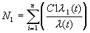
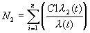
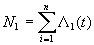
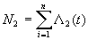
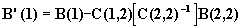
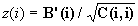

The HAZARD Procedure
The Cleveland Clinic Foundation.[1]
Requirements for the LINESIZE= Option
ICENSOR variable_name = time_variable_name;
LCENSOR variable_name = time_variable_name;
PARAMETERS parameter = value FIXparm ¼
;
PARMS parameter = value FIXparm ¼ ;
The EARLY, CONSTANT and LATE Statements
EARLY variable_name = value/options, ... ;
CONSTANT variable_name = value/options, ... ;
LATE variable_name = value/options, ... ;
Initial Parameter Specification
Excessive Number of Parameters
Scaling and Standardization of Variables and Imputation of Missing
Values
Variable Selection (Regression)
Obtaining Nonunique Observation Counts
PROC HAZARD is a procedure for parametric analysis of time-related events. However, you may use it to model arbitrary distributions of positive valued variables substituted for the TIME variable name. A detailed description of the model has been given in the overview document, Parametric Analysis of Time-Related Events: Procedures.
The HAZARD procedure uses the method of maximum-likelihood to aid in resolving up to three phases of the distribution of times until an event (early decreasing or peaking hazard, constant hazard, and late increasing hazard). It assists in your finding the simplest model that characterizes adequately the shape of early and late hazard phases from flexible, nested generic families of equations. Various model-building (including stepwise) strategies are then available to help you identify incremental risk factors for each phase. These factors are modeled as a log-linear function of concomitant variables, and simultaneous estimation of the coefficients is accomplished for all phases specified in the model.
To use PROC HAZARD, set the LINESIZE = option to a value of 132 or higher. Smaller values produce output with lines of question marks.
Since PROC HAZARD is now an external program, rather than integrated into SASÒ by means of its Toolkit, the procedure must be enclosed within a macro calling sequence as follows:
%HAZARD(
PROC HAZARD etc;
);
The following statements can be used with the HAZARD procedure:
PROC HAZARD options;
TIME
variable_name;
EVENT
variable_name;
RCENSOR variable_name;
ICENSOR
variable_name = time_variable_name;
LCENSOR
variable_name = time_variable_name;
WEIGHT
variable_name;
PARMS
parameter=value FIXparm ¼ ;
SELECTION
options;
RESTRICT
variable list;
EARLY
variable_name = value / options,¼;
CONSTANT
variable_name = value / options,¼;
LATE
variable_name = value / options,¼;
The TIME, PARMS, and either the EVENT or ICENSOR statements is required. Depending on your data, RCENSOR, ICENSOR, and LCENSOR statements may be required. If concomitant variables are to be examined in the model, then at least one of the EARLY, CONSTANT, and LATE statements are required.
This statement invokes the procedure. The following options are available:
|
CONDITION = number |
specifies a value between 3 and 14 that represents the base 10 logarithm of the largest permissible condition number of the optimization matrices before they are declared too ill conditioned to proceed with further computation. The default value varies, depending upon the optimization algorithm and the use of analytic or numeric derivatives. |
|
CONSERVE CON |
conserves events at each iteration using the conservation-of-events theorem (see Computational Method later in this chapter). By default the theorem is applied only prior to initial optimization, making adjustments to the scaling parameters so that all events are conserved. |
|
DATA = SASdataset |
names the SAS data set containing the data to be analyzed by PROC HAZARD. If DATA = is omitted, PROC HAZARD uses the most recently created SAS data set. |
|
MAXITER = number MI = number |
limits the number of iterations performed before terminating with a summary (for that step, if in a variable selection mode). The default value is 50. A value of 0 bypasses all optimization steps (except to insure that the scaling of all specified phases conserve all events unless NOCONSERVE is specified) and instead calculates the variance-covariance matrix for the input parameters at their specified values. |
|
NOCONSERVE NOCON |
suppresses all use of the conservation-of-events theorem. |
|
NOCOR |
suppresses default calculation and printing of the correlation matrix at the final model summarization step. |
|
NOCOV |
suppresses default printing and optional data set output of the variance-covariance matrix at the final model summary step. Note: if only one parameter is estimated, no covariance or correlation matrix is printed. |
|
OUTHAZ = SASdataset |
names the output SAS data set that contains the model specifications, parameter estimates, and variance-covariance matrix created by PROC HAZARD. PROC HAZPRED uses this data set for making predictions from the model. |
|
PRINTIT P |
prints details of each optimization iteration rather than only final summary statistics (for that step, if in a stepwise variable selection mode). |
|
QUASINEWTON QUASI |
selects the QUASINEWTON optimization algorithm rather than the default Newton algorithm. The QUASINEWTON method should be selected if difficulty is encountered in obtaining parameter estimates (see also STEEPEST below). |
|
STEEPEST |
specifies that optimization is started using the method of steepest descent. If STEEPEST is not specified, PROC HAZARD uses the default method of starting optimization with an actual or approximate Hessian matrix. |
The TIME statement names a variable that contains values for the time of the event or the time of censoring. (The time of event variable can be any other positive-valued variable whose distribution is to be modeled parametrically). The values must be positive numbers, greater than zero, otherwise the observation is deleted from the analysis.
An EVENT statement is required unless all events are interval censored (see The ICENSOR Statement). Variable_name identifies the variable that indicates the status of each observation. A value of zero indicates an event has not been observed (censored). A value of 1 indicates an event has been observed (uncensored). A value greater than 1 indicates the number of events taking place at the identical time of observation (in this case, the RCENSOR statement is generally used to stipulate the number of individuals censored at the same time).[2] See later section Obtaining Nonunique Observation Counts for details.
NOTE: if the distribution of a positive-valued variable is being modeled rather than time and the value for that observation is known, then specify the EVENT variable value as 1 (or the count of identical values).
The RCENSOR statement is optional and identifies a variable that contains the count of right-censored observations at each follow-up time. If an RCENSOR statement is not specified, the procedure assumes that the EVENT variable consists of only zeros and ones and supplies the complement.
NOTE: if the distribution of a positive-valued variable is being modeled rather than time and the value for that observation is known only to be greater than the value specified in the TIME variable_name, then set the EVENT variable to zero and the optional RCENSOR variable to 1 or to the count of identical values.
If an observation is interval-censored, variable_name indicates the count of identical observations, and time_variable_name is the time at which the observation became interval-censored. If the value of variable_name is greater than zero, then the interval-censoring time must be a time greater than or equal to zero and less than or equal to the value of the variable named in the TIME statement.
If an observation is left-censored, variable_name indicates the count of identical observations, and the time_variable_name is the time greater than or equal to zero at which the observation became known to be at risk of the event. If the value of variable_name is greater than zero, the left-censoring time must be less than the value of the variable named in the TIME statement.
Note: if the distribution of a positive-valued variable is being modeled rather than time and the value for that observation is interval information, then you set variable_name in the TIME statement to the upper value, time_variable_name in the LCENSOR statement to the lower value, and variable_name in the LCENSOR statement to 1 or to the count of values represented within the interval.
If an event is expressed as an ordinal or continuous value rather than simply as 0 or 1, the WEIGHT variable_name indicates the value associated with the event.
A PARAMETERS (or PARMS) statement is required. It specifies the scaling and shaping parameters for each hazard phase. Parameter identifies parameters included in the model, and value specifies the starting or fixed value for the parameter. FIXparm indicates that the parameter will not be estimated but is instead fixed at the specified value. PROC HAZARD attempts to generate a model specification that is consistent with the information supplied. Thus, the estimates supplied may be changed, and the usual default values may be different from those given below, depending upon the context of the overall specification. For a phase to be included in the model, at least the scaling (m) parameter for that phase must be specified. The parameter specifications and control options available are:
|
ALPHA = value |
exponent controlling the behavior of the late phase beyond TAU. Its default value is 1. |
|
DELTA = value |
coefficient between -1 and +1 for exponential model of time in the early phase. The default value is zero, which indicates that a linear function of time is to be used. NOTE: this parameter is rarely identifiable |
|
ETA = value |
overall exponent for late phase. Its usual default value is 2. (See also FIXGE2 and FIXGAE2.) |
|
FIXALPHA |
fixes ALPHA at its specified value. A fixed value of zero specifies limiting exponential equation (32), described in the introductory section of this chapter. A fixed value of 1 invokes the Weibull model (see Special Case 2: Weibull Model in the introductory section of this chapter). (See also FIXGAE2.) |
|
FIXDELTA |
fixes DELTA at its specified value. |
|
FIXETA |
fixes ETA at its specified value. |
|
FIXGAE2 |
fixes the expression (g×h)/a at 2. Only GAMMA and ETA are then estimated since the value of ALPHA is a function of the product of GAMMA and ETA. |
|
FIXGAMMA |
fixes GAMMA at its specified value. |
|
FIXGE2 |
fixes the product of g×h at 2. Only one the two parameters GAMMA or ETA is then estimated.. |
|
FIXM |
fixes m at its specified value. A fixed value of M=0 invokes limiting exponential equation (9) or (15), depending upon the sign of NU. |
|
FIXMNU1 |
fixes the product m×n at +1 or -1 (depending on the signs of M and NU). If FIXMNU1 is invoked, either M or NU should be specified, but both cannot be specified (see Table 4). |
|
FIXNU |
fixes n at its specified value. A fixed value of NU=0 invokes limiting exponential equation (15), described in the introductory section, Parametric Analysis of Time-Related Events: Procedures. |
|
FIXTAU |
fixes TAU at its specified value. |
|
FIXTHALF |
fixes THALF at its specified value. |
|
GAMMA = value |
exponent on (TIME/TAU). Its default value is 1. The product of GAMMA and ETA must be greater than or equal to 2. Otherwise, recalculations are made to force this to occur (unless WEIBULL is specified). (See also FIXGE2 and FIXGAE above). |
|
M = value |
Early phase overall power parameter. The default value is 1. The value of M, like NU, is unbounded, but negative values, positive values, and the value of zero invoke specific subsets of models. (See also FIXMNU1 above.) |
|
MUC = value |
Scaling parameter for the constant-hazard phase. Its absence or a value of zero or less is interpreted to mean that a constant phase is not to be included in the model. Valid values are positive if the constant phase is to be included. |
|
MUE = value |
Scaling parameter for early phase. Its absence or a value of zero or less is interpreted as indicating the early phase is not to be estimated and DELTA, THALF, NU, and M, are all ignored. Its value, if the early phase is to be included, must be positive. |
|
MUL = value |
Scaling parameter for the late phase. Its absence or a value of zero or less is interpreted to mean that a late phase is not to be included in the model and any specification for TAU, GAMMA, ALPHA, or ETA is ignored. Valid values are positive if the phase is to be included. |
|
NU = value |
Early phase shaping parameter. The default value is 2. Values of 0, negative, or positive invoke three different families of models. (See also FIXMNU1 above.) |
|
TAU = value |
The time when the late phase begins to accelerate rapidly. The default value is 0.75 times the maximum follow-up time given by the TIME variable, unless FIXGE2 and FIXGAE2 are both specified or ALPHA is fixed at 1, for which a specification of TAU is not needed, and is ignored if specified. When specified, its value must be positive or else estimation is begun at the default value. |
|
THALF = value |
Half-time for early phase hazard. The default value is 1 if value is not specified. A specified value must be greater than zero, or the default value will be used. |
|
WEIBULL |
Remove constraints on the late phase parameters TAU, GAMMA, ALPHA, and ETA, except that all must be positive. |
Use a SELECTION statement to test covariables in an automatic variable selection mode. During the initial variable selection screening process, we recommend that you fix all model shaping parameters at the values obtained during initial overall evaluation of the distribution of times until the event. This allows use of efficient algorithms considerably faster than those used if shaping parameters are also optimized. Even if shaping parameters are specified, all estimated shaping parameters are treated as being fixed for variance-covariance matrix calculation during the SELECTION process. This introduces a small error in the standard deviation and in the P-values during the screening process, but greatly speeds the evaluation of the concomitant information. Thus, it is always necessary as a final step to run the model (preferably with entry of good parameter estimates for each factor and using CONSERVE) without fixing those shaping parameters for which estimates were obtained during initial evaluation of the overall distribution of the event. Indeed, it is advisable to reevaluate all shaping parameters at this stage, since on rare occasions the underlying hazard function shape changes once concomitant variables are in the model. The options below may appear in the SELECTION Statement:
|
BACKWARD BW |
selects the backward elimination method for reducing the number of variables in the model. Unless NOSTEPWISE is specified, the method is backward elimination with addition. That is, prior to eliminating a variable from the present model, other variables not in the model are examined for possible inclusion in the model if the criterion of SLENTRY is met. |
|
FAST F |
invokes the fast, approximate backward elimination method (without addition) to delete nonsignificant variables from the initial model. Then the usual pattern of FORWARD or BACKWARD is invoked, if either of these is specified. |
|
FORWARD |
selects the forward variable selection method for adding variables in the model. Unless NOSTEPWISE is specified, the method is forward stepwise with elimination. That is, prior to adding a new variable, any variable in the present model not meeting the SLSTAY criterion is moved out of the model. |
|
MAXSTEPS=value MAXS=value |
upper limit on the number of steps before terminating with a summary. A value of zero is valid and is useful for initial verification of the variable selection setup and for obtaining Q-statistics for variables not in the initial model. |
|
MAXVARS=value MAXV=value |
specifies an upper limit on the number of variables that can be retained in a final forward-selection model. For a backward-selection model, this specifies the maximum size of the final model. |
|
MOVE=value |
number of times a variable can be eliminated from (moved out of) a model. The default value is 1. A value of 0 permits no movement of variables into or out of the initial model. At any variable elimination step, the value of MOVE = for the variable eliminated from the model is decreased by one to show the number of times it has been moved out of the model. If MOVE = falls to zero for a particular variable, that variable is then permanently out of the model and only Q-statistics are calculated and printed (see NOPRINTQ). The value of MOVE = is overridden by the individual specification that may accompany each variable (see below). |
|
NOPRINTQ NOQ |
suppresses printing Q-statistics for variables not in the model. |
|
NOPRINTS NOS |
suppresses printing of details for each step. Only a summary of the movement of variables at each step and the associated statistics is given. |
|
NOSTEPWISE NOSW |
specifies a selection process that moves unidirectionally. If FORWARD is specified, then variables STARTed or INCLUDed in the model are not removed (SLSTAY is ignored), and variables out of the model can only be entered into the model according to the SLENTRY criterion and not removed after entry. If BACKWARD is specified, variable out of the model at any time are not considered for entry (SLENTRY is ignored), and variables in the model can only be removed from the model and not reentered according to the SLSTAY criterion. |
|
ROBUST |
specifies the QUASINEWTON optimization algorithm for the first step, initiated by the method of steepest descent. This option is particularly useful when the BACKWARD or FAST options are selected, or many variables are selected by the /START or /INCLUDE options and no starting values are specified for the concomitant variables. After the first step, the default (or specified) algorithms are used. (See SEMIROBUST below for an alternative strategy) |
|
SEMIROBUST SEMI |
specifies the QUASINEWTON optimization algorithm for the first step, initiated by a Hessian matrix or its approximation. After the first step, the default (or specified) algorithms are used (see ROBUST above) |
|
SLENTRY = value SLE = value |
significance level (P-value) of the Q-statistic for variables to be added to the model. Its default value is .3. |
|
SLSTAY=value SLS=value |
significance level (P-value) for retaining variables in the model. If FORWARD is specified, the default value is .2; if BACKWARD is specified, the default value is .05. |
|
STEPWISE SW |
with FORWARD, selects the forward stepwise with elimination method for adding variables to the model. Prior to adding a new variable, any variable in the present model not meeting the SLSTAY criterion is moved out of the model. This is the default method for variable selection if FORWARD is not explicitly specified. STEPWISE and SW are obsolete specifications included only for compatibility with SASÒ Version 5.18. |
Use one or more RESTRICT statements to allow only one of a group of variables (variable list) to be in the final regression model for each phase. A variable may be included in more than one RESTRICT variable list. RESTRICT is useful particularly in examining a set of highly correlated variables in stepwise regression. Note that the RESTRICT algorithm operates on each phase separately. There is at present no statement to RESTRICT a group of variables globally across all phases.
During FORWARD selection steps, the restricted variables are treated the same as other nonrestricted variables. However, once one of the restricted variables from the list enters the model, the other restricted variables are not allowed to enter. Q-statistics are given for all restricted variables not in the model, however.
During BACKWARD selection, the selection process will not terminate until there is at most one of the restricted variables in the model.
You must include one of these statements for each hazard phase for which risk factor variables are to be considered. At least one valid SAS variable name (in numerical format only) must follow the word EARLY, CONSTANT, or LATE.
Value is a starting value, is optional, and is used instead of the default value of zero. This should rarely be necessary when a FORWARD variable selection method is used, but may be necessary when many variables are selected (for example, in a BACKWARD strategy). Convergence criteria are to some extent scaling-dependent, based upon initial parameter values. Thus, for final model runs, starting values should always be used.
Options may include one of the following. Use of one of these options requires a slash (/) directly following the variable_name or the starting value.
|
EXCLUDE E |
excludes the variable from the model permanently, and only Q-statistics are calculated for the variable. |
|
INCLUDE I |
includes the variable in every model considered. This is the default if the SELECTION statement is not used. |
|
MOVE = value M = value |
the number of times the variable may be moved out of the model building process if the STEPWISE option has been invoked. This specification overrides the overall default value. If MOVE = 0, then the variable is neither moved in (FORWARD STEPWISE) not out (INCLUDE, START, or BACKWARD) of the model. |
|
ORDER=value O=value |
forces the order of entry of variables during the variable selection process. The values may be any positive number and do not have to be integers in sequential order. During FORWARD selection, variables are entered in the order specified before other variables are allowed to enter (unless specified on a /START or /INCLUDE option). During BACKWARD elimination, the variables are eliminated in reverse numerical order. |
|
START S |
includes the variable initially, but it may be removed in the stepwise elimination process |
The specification for each variable is separated from the next by a comma. This is not the usual SASÒ syntax convention. If none of the options is used and if more than one variable is specified, the comma just still be used to separate variable names. A comma must not be used after the last variable (a semicolon delimits the end of the statement).
The HAZARD procedure omits observations from the calculations if the observations have missing or inadmissible values for any part of the structural or concomitant variable specification. Even variables that are to be excluded from the model are examined for missing values since calculations using them may be requested. The proceedure recognizes missing value indicators stipulated in MISSING statements as well as the standard decimal point.
On the procedure’s printed output of statistics for each variable, the number of missing values identified is displayed. However, in that same tabular display, the values given for all other statistics are those pertaining after all observations having missing values for any variable are deleted.
(For further discussion, see Standardization of Variables later in this chapter.)
You must specify either the EVENT variable name, the ICENSOR variable name, or both. Any time that ICENSOR is specified the ICENSOR time variable value must be between 0 and TIME variable value or the observation is deleted. If the interval censoring time equals TIME, the ICENSOR count is added to the EVENT count. If the data are simple, meaning that the EVENT variable values are simply 0s and 1s, then an RCENSOR variable is not needed, but is internally generated as the complement of the EVENT variable. The LCENSOR time variable values must be between 0 and TIME variable.
The procedure makes every effort to start the estimation process with reasonable parameter guesses. Even when you specify a particular parameter, the procedure will check the specification and alter your input specification to one that is either preferred (such as GAMMA vs. ETA when a simple Weibull is specified and these parameters become interchangeable) or to one making mathematical sense. If a specification cannot be altered to make mathematical sense, the procedure terminates with a message to that effect. The first page of the printout presents the summary of the internal decisions made by the procedure.
If the number of parameters to be estimated equals or exceeds the number of events observed, the model is not processed. This limitation is not mathematically dictated, however, the effective sample size (degrees of freedom) for a time-related event is closely coupled to the number of observations with complete information, and, thus, to the number of events that have been observed. An excess of number of parameters over number of events thus quickly depletes the available degrees of freedom and leads toward singularity in the information matrices. A symptom of this occurring, at possibly fewer parameters than number of events, is the sudden incorporation of previously nonsignificant variables at very small P-values. This is consistent with the behavior of a linear regression model when single variables are explaining single dependent variable values.
In a multiphase model such as supported by PROC HAZARD, the effective number of degrees of freedom for a particular phase of hazard may be considerably fewer than the overall number of events. The implication of this is detailed below under Covariable Considerations.
In initial screening of concomitant variables with variability that extends an order of magnitude or more, standardization of variable values to a mean of zero and a standard deviation of one in theory minimizes scaling problems in optimization and reduces the usual high degree of correlation of the intercepts for the model with the concomitant variables. If such standardization is desired, use PROC STANDARD as follows:
PROC
STANDARD DATA = SASdataset
OUT=SASdataset REPLACE MEAN=0 STD=1;
VAR
variables;
A simpler, equally effective, and more easily communicated strategy is to scale the variable by a fixed mathematical transformation.
PROC STANDARD also permits imputing for any missing values the mean of the non-missing values for that variable (the REPLACE option in the above example). This, particularly when coupled with a missing value indicator variable and thoughtful informative value imputation, can be used with appropriate caution to avoid severe decimation of the data in the initial stages of the variable screening process. When final estimates are to be made for the model established by the initial research, then the standardization can be removed (with or without removal of the missing value replacement option) if desired.
The maximum number of covariables that should be allowed to remain in a specific model phase should not exceed the number of events represented in that phase. Since all phases extend from time zero to infinity, in a sense all events are in all phases. However, if for each event you calculate the proportion of total hazard at the time of the event that is represented by the phase-specific hazard function, the sum of all such calculations will equal the number of events represented by that phase. For example, if an early hazard phase and a constant hazard phase are present and C1 represents the count of events at time=t, then:

and

where N1 and N2 represent the number of early and constant hazard phase events, respectively. Alternatively, one can use the formulae:

and

PROC HAZPRED can be used to provide the information above after determining the overall structure of the model. (A SASÒ macro routine is available from the authors to accomplish this).
Some variables are not good candidates as potential risk factors. They may correlate either exactly or very nearly with another variable or group of variables in the model. Such redundancy may be hidden. However, messages about singularity are a clue to the discovery of such variables. Other programs that explore data sets for linear or near linear combinations of variables may be valuable for such diagnostics. Other variables may represent categories of individuals who are sparsely represented in the data. Insufficient information may be available to determine if the category influences the distribution of times until an events Other variables representing categories of low frequency may be associated with no events in a phase. The Q-statistics often identify such variables before they enter the model. Other variables appear to be perfect discriminators for the event. They would be expected to have a coefficient of infinite magnitude. They are bad model candidates, causing singularities. Occasionally such variables are computationally tractable, but require the investigator to set all variance-covariance terms to zero for use in prediction. The P-value for such a variable is determined by fitting a model with the variable incorporated and another with it excluded. The log likelihood test may then be used.
Except for the case of a single scaling parameter (such as MUC for the constant hazard phase, or MUE or MUL with all shaping parameters fixed at specified values) that can be estimated in closed form (see Conservation of Events, below), computational parameters must be estimated iteratively. PROC HAZARD uses nonlinear optimization based on algorithms presented by Dennis and Schnabel (1983). The optimization can use conservative algorithms that take many iterations, but are robust, or, it can use less robust, faster converging algorithms. (We have modified the line search method from that of Dennis and Schnabel by allowing it to be bi-directional.)
The most conservative algorithm is selected optionally (QUASINEWTON) when the default Newton method fails. This may be useful during initial explorations of the number of phases resolvable in the model and the simplest form of equation to select for a given phase. The optimization procedure may be supplemented further by selecting the steepest descent method (STEEPEST) to find its initial direction of search, followed by using a secant derivative-free method.
After establishing the structure of the distribution of times until an event, the exploration of risk factors can be accomplished with fewest iterations using the less robust modified Newton algorithm. This algorithm is supplemented by a bi-directional line-search algorithm that is invoked if the likelihood is not increased after a Newton step. This is PROC HAZARD’s default method.
Both approaches may be supplemented with additional information at the start of the optimization process. By default, the procedure calculates at least the diagonal elements of an initial Hessian matrix from which the direction and magnitude of initial search is ascertained. Again, this is not as robust as the steepest descent initiation method, but it may decrease the number of passes through a reasonably well-behaved data set.
In all the methods. an actual or approximate first and second derivative to the objective function is used. In general, numerical derivatives are used, employing the simple forward difference method and an optimum step size. If all shaping parameters are fixed, however, processing time is saved by using analytical derivatives, which for the scaling terms are relatively simple functions. Numerical derivatives do not, in general, generate an exactly zero value for derivatives that analytically should be zero; nor are small non-zero values guaranteed to cancel each other out in the processing of a large number of observations.[3] I
The algorithm is also conservative in its estimation of the presence of singularities as reflected in the condition number. For problems that are moderately ill-conditioned, you may relax the condition number criteria. Often the ill-conditioning during initial exploration of concomitant information can be reduced by scaling or by standardizing the variables to a mean of zero and standard deviation of one (see Scaling and Standardization of Variables and Imputation of Missing Values earlier in the chapter)..
The sum over all observations of cumulative hazard calculated at the individual time (t) of follow-up, using maximum-likelihood parameter estimates, equals the number of observed events. This characteristic of the model used in the procedure is termed conservation of events.[4]
Since events are conserved, one scaling parameter can be solved in closed form. This does not speed up the fitting process appreciably, however. Nevertheless, the routine application of conservation of events to the initial model specification, with adjustment of all scaling parameters so that all events are conserved, is of great benefit and is the default for the procedure. The initial adjustment brings the estimates into the region of the data distribution before any optimization is begun.
Use of the CONSERVE option is recommended when the shaping parameters of the distribution of times to an event are being explored, but not during the exploration of risk factors when computational speed should be maximized. However, once a final model is found, explicit specification of parameter estimates and use of the CONSERVE option for maximum parameter accuracy is recommended.
Use of the NOCONSERVE option is recommended when reasonably accurate estimates are available for one phase, and exploration is undertaken for discovery of a second or third. Under these circumstances it is important to retain the initial estimates for the known phase. We recommend, then, fixing all shaping parameters and determining the scaling parameters without conservation of events. Thereafter, the shaping parameters can be explored with the CONSERVE option selected.
Note that if there is only one model scaling parameter to be estimated, it is solved for directly, not iteratively, by the method of conservation of events.
P-values for shaping parameter estimates estimate are based on the asymptotic normality of the maximum-likelihood estimate. The null hypothesis is that the parameter is equal to zero. The test is performed on the transformed parameter estimates because they have a more symmetric, normal-appearing, distribution. However, testing for zero in these transformed domains may have little meaning. For example, when examining scale parameter estimates and their P-values, the test is for zero in the logarithmic domain, which is equivalent to a test of scale factor equal to one. Therefore, this test does not test for necessity of a phase. For this, the usual likelihood ratio test should be used based on the difference in likelihood between a model with the phase and a model without the phase included. Similarly, in the early phase model, the P-value for E2 (THALF) can be ignored, since it is strictly a function of the units of expression of time, whereas the P-values on NU and M are helpful in determining the existence of special cases (limiting cases). (If the scaling of time is such that the P-value for E2 is nearly unity, the information matrix may tend toward singularity, necessitating changing the units in which time is expressed).
P-values for
covariables are calculated in the same manner as they are for the shaping
parameter estimates. However,
these coefficients have not been transformed, so the test for equality to zero
is indeed a test of the necessity of including the variable in the model. In the variable selection mode, P-values for the variable just added or
the variable just deleted are calculated based on the likelihood ratio
test. The P-values from these two methods are not identical but are usually
close. For a discussion of these
two methods of calculating P-values, see Lawless and Singhal (1978).
We found no precedent upon which to devise a strategy for variable selection in the setting of multiple phases with possibly the same list of candidate variables in each phase. PROC HAZARD takes the approach of considering all variables in all phases as a whole and deciding globally which one variable to add (the most significant variable in any of the phases under consideration as reflected in its asymptotic P-value) or delete (the least significant variable in all the phases considered). Nevertheless, the MOVE, INCLUDE, START, and EXCLUDE flags that can accompany any variable serve to tailor the algorithm to the users desires. For example, a phase at a time can be considered.
A second feature of the selection algorithms (unless NOSTEPWISE is invoked) is that the direction of search can be reversed. For example, in forward stepwise mode, the algorithm first checks to see if a variable should be removed from the model before proceeding; in the backward stepwise mode, variables not presently in the model are examined first to see if one should be added before the model is examined for variable elimination. Some of these features can be defeated by allowing only one move per variable or by changing the SLENTRY or SLSTAY options.
The present algorithm retains memory of only the immediately preceding move (except for keep track of the number of moves a variable has made out of the model). If MOVE= is specified to be greater than 1, there will be some backtracking, particularly if the P-value for entry is very different from the P-value for retention. Compensating for the extra steps is the assurance of eliminating the possibility of infinite looping.
Statistical significance levels for variables in the current model are based on the maximum-likelihood estimate asymptotic statistics, whereas the significance levels for variables not in the current model are based on Q-statistics (discussed below).
During a stepwise regression, forward or backward, Q-statistics are calculated to produce significance levels (P-values) for variables not in the current model. The Q for the ith variable not in the model is defined as:
Q(i) = U(i;B,0)2 / I(i;B,0)
where U(i;B,0) is the derivative of the log likelihood with respect to the ith variable, evaluated at the maximum-likelihood estimates, B, and at zero (0) for the ith variable in the model, and where I(i;B,0) is the second derivative of the log likelihood evaluated similarly as U(i;B,0). (See Cox, 1972 for definition of Qs and Harrell, 1980 for an application.)
The Q-statistic for the ith variable is also equal to
z(i)2
where
z = beta(i)’/ SE(i)’
where beta(i)’ is the estimate for beta(i) after one full Newton step for a model with the current variables entered and started at their maximum-likelihood estimates and with the ith variable entered and started at zero (0). SE(i)’ is derived from the second derivatives after this one step.
Calculation of Q-statistics allows for the presentation of estimates (not maximum-likelihood estimates) for variables not in the current model, approximate standard errors (SE), z-statistics, and P-values for variables not in the current model. Under four circumstances these estimates are not presented (and a flagged by 1, 2, 3, or 4 asterisks on the printout). The second derivative may be negative anomalously, indicating the information matrix is singular. The matrix may be ill-conditioned, the tolerance may be zero or negative, or the estimate may be larger than an absolute value of 50. When a variable is associated with no data, you simply need to eliminate that variable. Otherwise, the flags merely mean that Q-statistics are not tractable. Under such circumstances, the suitability of a variable must be obtained “by hand” (including it in the model using a /S or /I option), and its significance and magnitude of coefficient ascertained.
Fast backward regression is a noniterative method of backward regression that requires few calculations compared to the usual iterative backward selection process. It uses approximations to the maximum-likelihood estimates and their asymptotic standard errors. The calculation of these approximations does not require additional passes through the data. For full details see Lawless and Singhal (1978) and Harrell (1980).
The method follows these steps:
1. For the entire initial model, calculate the usual maximum likelihood estimates, B, and their asymptotic standard errors from the inverse of the information matrix, I.
2. Calculate a z(i) = B(i) / SE(i) for each variable.
3. Eliminate the variable with the smallest z (or largest P-value).
notation:
|
B(1) |
maximum-likelihood estimates from the full model for variables remaining in the model. |
|
B(2) |
maximum-likelihood estimate from the full model for the variable to be excluded from the model. |
|
C(1,1) |
the portion of the asymptotic variance-covariance matrix (inverse of I) that corresponds to B(1). |
|
C(2,2) |
the element of the asymptotic variance-covariance matrix (inverse of I) that corresponds to B(2). |
|
C(1,2) |
the portion of the asymptotic variance-covariance matrix (inverse of I) that corresponds to B(1) and B(2). |
4. For the new reduced model calculate approximations, B’, to the maximum-likelihood estimates using the following first order approximation:

5. Calculate a z(i) for the variables in the reduced model:
.
6. Based on these current z(i)s eliminate the variable with the largest P-value.
7. Go back to step 4 and continue until no more variables have a P-value greater than SLSTAY.
This method produces results that are usually similar to the complete backward elimination with iterative calculation of the maximum-likelihood estimates. It does require a fit of the entire initial model and it can only move backward.
The fast backward method can be used to produce starting values for coefficients of variables in the model for a backward step when maximum-likelihood estimates are being iteratively calculated. PROC HAZARD takes advantage of this whenever there is a backward step variable selection.
When there are a reasonable number of nonunique observations or the data are naturally grouped, processing time can be reduced by generating a compacted data set of count data, for example, consider the following SASÒ statements:
* Let INT_DEAD be the
variable name for follow-up TIME, and DEAD be the EVENT name with 0=alive and
1=dead.;
PROC SUMMARY NWAY;
CLASS INT_DEAD;
VAR
DEAD;
OUTPUT
OUT=COMPACT N=NOBS SUM=DEATHS;
DATA COMPACT;
SET
COMPACT;
CENSORED=NOBS-DEATHS;
%HAZARD(
PROC HAZARD DATA=COMPACT;
TIME
INT_DEAD;
EVENT
DEATHS;
RCENSOR
CENSORED;
PARMS
etc.;
);
In
this example, PROC SUMMARY creates a minimum set of observations from the
original data set, each with a unique value for INT_DEAD. Two new variables are added to each new
observation: the number of
original observations compacted into one observation (NOBS) and the number of
deaths at this unique observation time (DEATHS). The count of right-censored observations (number alive at
this unique time of follow-up) is performed using these new variables in a DATA
step. The variables DEATHS and
CENSORED are used respectively in the EVENT and RCENSOR specifications of PROC
HAZARD.
Several examples are available in the accompanying data file.
Dennis JE Jr, Schnabel RB. Numerical Methods for Unconstrained Optimization and Nonlinear Equations. New Jersey: Prentice-Hall, Inc, 1983.
Lawless JF, Singhal K. Efficient screening of nonnormal regression models. Biometrics 1978;34,318-27.
Harrell F. The PHGLM Procedure. SUGI Supplemental Library User’s Guide. Cary, NC: SAS Institute, Inc, 1986.
[1]Inquiries concerning this procedure should be directed to Eugene H. Blackstone, MD at (216) 444-6712. Our general e-mail address for inquiries about program availability, installation or functioning is hazard@bio.ri.ccf.org. Mail to that address is simultaneously received by Dr. Blackstone and Mr. John Ehrlinger, the programmer currently supporting the procedures. The procedures, along with this documentation, examples, and useful macros, are available on the Internet at www.clevelandclinic.org/heartcenter/hazard. Specific data application questions are welcomed, directed either to Dr. Blackstone at blackse@ccf.org or to hazard support at hazard@bio.ri.ccf.org.
[2]Noninteger values are permitted. However, use of such values usually implies that one is working with a weighted event, and for this the WEIGHT statement is now provided.
[3]Indeed, our experience over the past ten years since the mid-1980s, has lead us to the belief that a deficiency in the present computational methods is lack of a completely analytic set of derivatives. As time permits, these will be developed and become part of the standard method.
[4]Proof of a theorem of conservation of events for a broad class of semi-infinite, positive distributions, defined between t=0 and infinity, t continuous, for right and left or interval censored observations, is available from the authors.